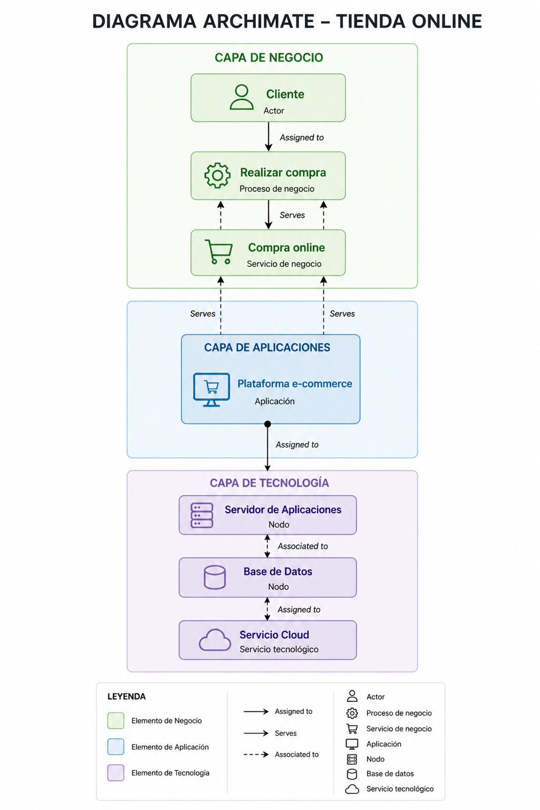
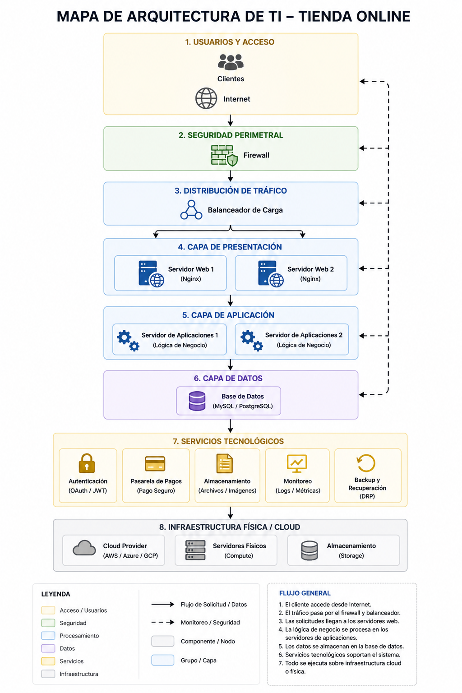

Trabajo Académico · Arquitectura Empresarial
Este trabajo presenta el análisis y modelado de la arquitectura empresarial de una tienda en línea, utilizando los marcos de referencia ArchiMate, TOGAF y buenas prácticas de Arquitectura TI.
Explorar el proyecto ↓Modelo visual por capas: Negocio, Aplicaciones y Tecnología.
Infraestructura, plataformas y servicios tecnológicos integrados.
Aplicación del ADM con fases B, C y D; análisis AS-IS vs TO-BE.
Síntesis de hallazgos y recomendaciones del análisis realizado.
Representación visual de la arquitectura de la tienda online usando el estándar ArchiMate 3.1 de The Open Group.

🗺️archimate.png
Figura 1. Diagrama ArchiMate – Tienda Online
Modela los procesos, actores y servicios que entregan valor al cliente. Incluye los flujos de compra, gestión de pedidos y atención al cliente.
Sistemas de software que soportan los procesos de negocio: e-commerce, ERP y CRM.
Infraestructura física y virtual que sustenta las aplicaciones: servidores, redes y nube.
Descripción de los componentes tecnológicos que sustentan la operación de la tienda online.

🖥️arquitectura-ti.png
Figura 2. Arquitectura TI – Tienda Online
Capa base que provee los recursos de cómputo, almacenamiento y red necesarios para operar los sistemas de la tienda.
Middleware y herramientas de desarrollo que facilitan la ejecución de aplicaciones de negocio.
Servicios expuestos al negocio y a los usuarios finales a través de APIs y protocolos estándar.
El cliente accede al sitio web a través del CDN y el balanceador de carga distribuye la petición.
El frontend React consume la API REST del backend (Node.js / Django) desplegado en contenedores.
El backend consulta Redis (caché) antes de ir a PostgreSQL para obtener el catálogo de productos.
Al confirmar la compra, se invoca la pasarela de pagos y se publica un evento en la cola de mensajería.
El microservicio de despacho consume el evento y notifica al cliente por correo electrónico transaccional.
Architecture Development Method (ADM) de TOGAF 10 aplicado a la arquitectura de la tienda online.
El Architecture Development Method (ADM) es el núcleo de TOGAF. Proporciona un proceso iterativo y probado para desarrollar y gestionar el ciclo de vida de una arquitectura empresarial. Se compone de fases interconectadas que guían desde la visión estratégica hasta la implementación y el gobierno.
Define la estrategia de negocio, el gobierno y los procesos clave.
Define los sistemas de información y el modelo de datos necesarios.
Especifica la infraestructura de TI que soporta las aplicaciones.
La trazabilidad garantiza que cada decisión tecnológica esté alineada con los procesos de negocio y los objetivos estratégicos de la organización.
Principales hallazgos y recomendaciones derivados del análisis de arquitectura empresarial.
La integración entre las capas de negocio, aplicaciones y tecnología es el factor crítico de éxito. ArchiMate permitió identificar brechas de comunicación que limitaban la escalabilidad de la tienda.
Migrar a una infraestructura cloud-native con contenedores permite a la tienda escalar dinámicamente durante picos de demanda (como fechas especiales), reduciendo costos operativos en un estimado del 30–40%.
El ADM de TOGAF proporcionó un marco estructurado para planificar la transición del estado AS-IS al TO-BE, asegurando la trazabilidad entre la estrategia organizacional y las decisiones tecnológicas.
La implementación de controles de seguridad (WAF, cifrado TLS, MFA) y políticas de gobierno de datos son requisitos no negociables para garantizar la confianza del cliente y el cumplimiento normativo.
Toda decisión de arquitectura debe evaluarse en función del impacto en la experiencia del cliente. La automatización de notificaciones, el catálogo en tiempo real y los pagos multicanal son los diferenciadores competitivos clave.